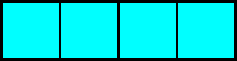
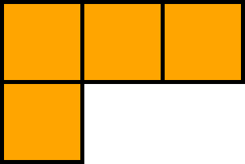
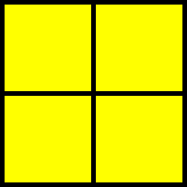
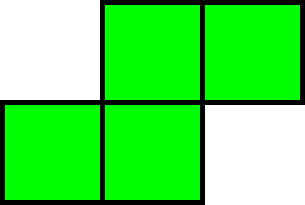
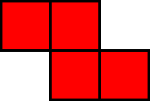

About the Shapes
In the game of Tetris, there are 7 different shaped pieces referred to by mathematicians as tetrominos. Three of them are one-sided, but two can be reflected upon themselves to make a total of 7 shapes. If you count every possible rotational position of the pieces you have a total of 19 fixed positions that the tetrominos can be found in during the game.
Meet the Tetrominos
Each tetromino is referred to by a letter designation which resembles its shape, but there are other names as well:
A Gallery of Tetrominos
I-Block
straight, stick, strike, line, vav (or vov, waw), final nun, one, the cyan piece,
the long skinny one, the slim jim, tetril, TGM-red, hot shot, long, slim dandy, the flashmaker, long
boi, big poppa, thin lizzy, stack-em-up, Euclid's Arrow, four on the floor, and George.
J-Block
the blue piece, lowercase R, gamma, ghe, ge, inverse L, Va, reverse L, backwards L,
left L, left periscope, left hook, led, left elbow, backwards (or reverse, inverse, etc)-orange,
backwards daled (or dalet, daleth, dales), backwards resh (or reish), and left gun
L-Block
the orange piece, alpha, outverse J, seven, Vb, L2, right L, backwards J,
TNT-magenta, right periscope, right hook, jed, right elbow, backwards-blue, daled (or dale, daleth,
dales), resh (or reish), final kaf (or kof), final chaf (or chof, khof, khaf), reverse J, and right
gun
O-Block
square, block, samech, final mem, samekh, zero, sun, circle, the yellow piece,
TNT-gray, and box
S-Block
the green piece, right turn, inverse skew, right skew, H, left N, Wa, saw,
backwards-red, right dog, right kink, reverse squiggly, backwards squiggly, right squiggly, right
zigzag, TGM-magenta, and right snake
T-Block
The Tetris Block, Tetris logo**, up-down-left-right, WASD, the purple/magenta
piece, Y, Y' T turn, ted, triangle, arrow, small stairs, pyramid, TNT-yellow, TGM-cyan, tire, tires,
te, tee, and t-piece
Z-Block
the red piece, left turn, outverse skew, right skew, S2, N, right N, Wb, zaw,
backwards-green, lightning bolt, left dog, left kink, squiggly, zigzag, left squiggly, left zigzag,
TGM-green, and left snake